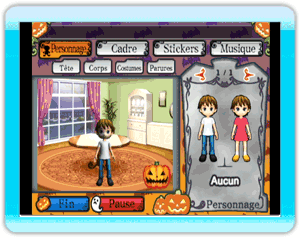

9 |
Créer une carte |
 |
Créer une carte pour la première fois Lors du premier lancement de ce programme, "Créer une carte" débutera par un tutoriel. Le tutoriel couvre aussi bien la réalisation de carte que la création de message et l'envoi de carte. Écran de création de carte Les instructions défilent en haut de l'écran. Pointez un élément inconnu, et les instructions correspondantes apparaîtront. Créer un personnage Vous pouvez choisir de créer un homme ou une femme. [Tête] : choisissez un couvre-chef. [Corps] : choisissez des vêtements. [Costumes] : choisissez un costume couvrant le personnage de la tête au pied. [Parures] : choisissez les objets que portera votre personnage. Choisir un cadre Choisissez un décor que vous aimez parmi tous ceux proposés. Chaque décor a un cadre. Appuyer sur l'interrupteur du cadre déclenche son animation. Musique d'ambiance Choisissez le morceau qui sera joué lorsque le destinataire recevra la carte. Glissez l'icône de note de musique et déposez-la sur la carte pour jouer le morceau. |
 |
 |
 |